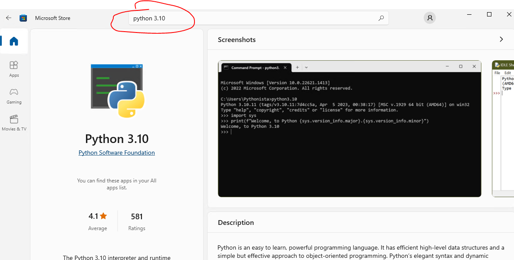
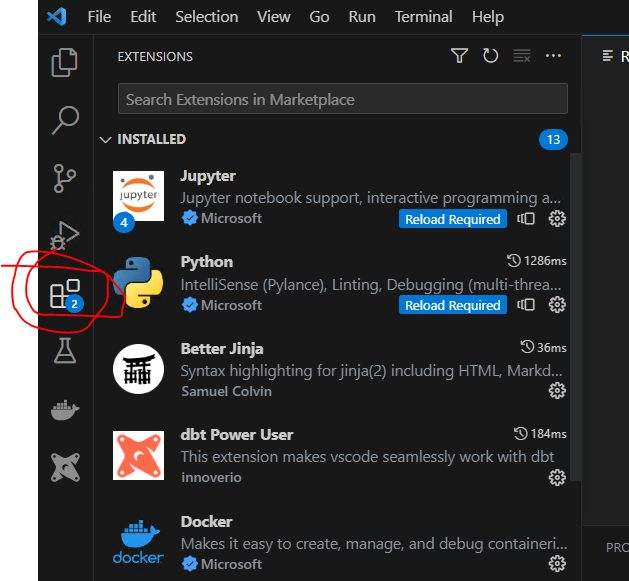
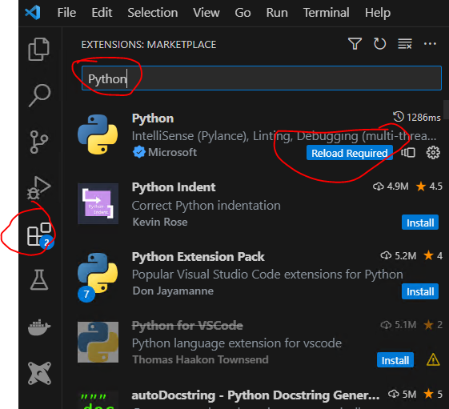
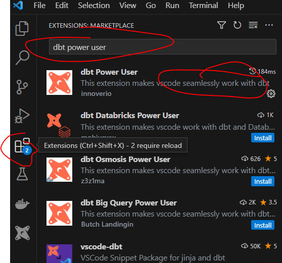
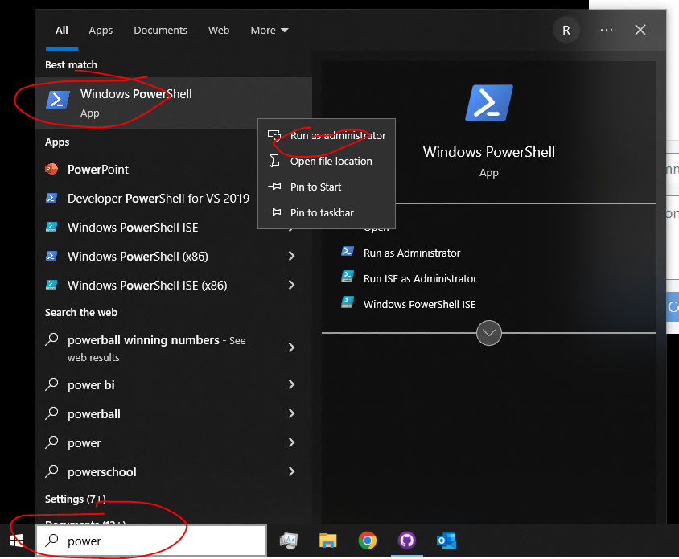
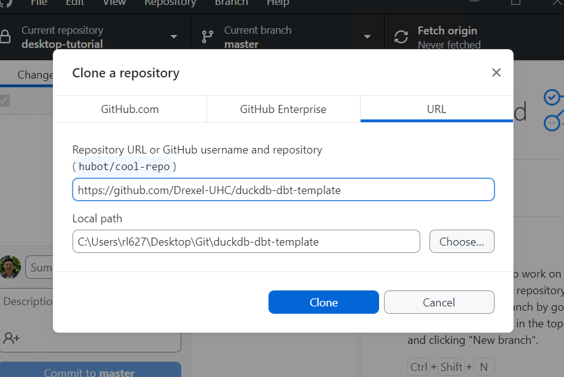
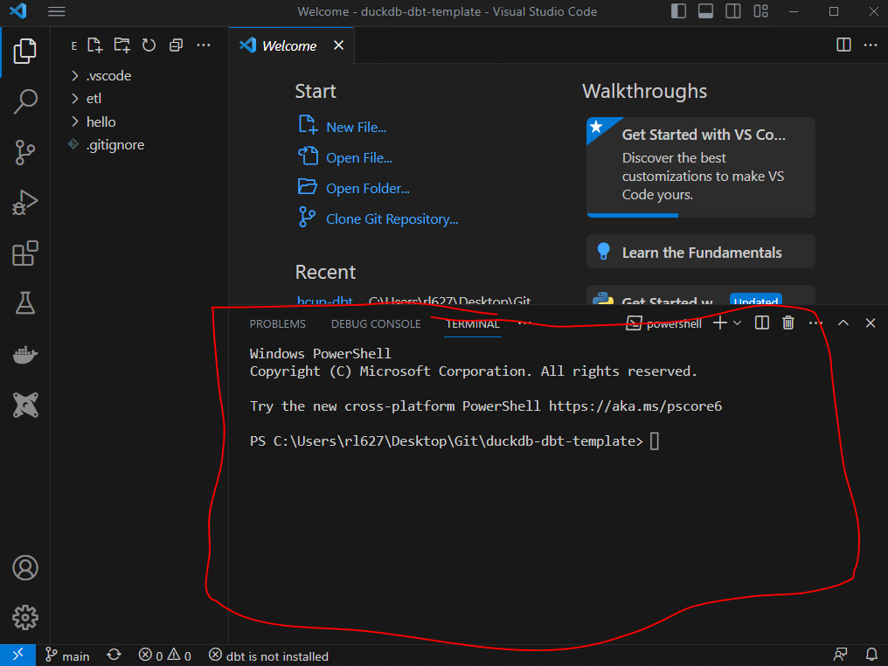
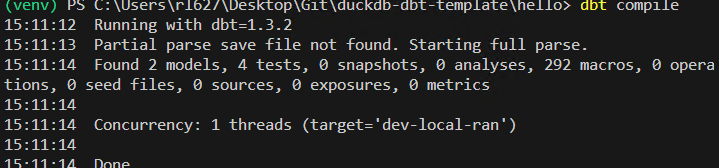

1. local setup
Install a few pieces of software to get started
We will lean on a few key technologies for this course
- GitHub: for version control, cloud computing and web hosting.
- Slack: for DMs with UHC + DBT groups
- ChatGPT: for AI assist, semantic to syntax translations
- VS-code: as our primary IDE (Interactive Developement Environment)
- DuckDB: a modern OLAP database (external materialization, multi-lingual, serverless)
- Apache Parquet: modern open source columnar stoware format designed for analytics.
1.1 Sign up for GitHub
Sign up for GitHub desktop here: https://github.com/join
1.2 Install GitHub desktop
(If you want to do Git in a GUI, we recomend this one; if you want to work command line go for it!)
Install GitHub Desktop here: https://desktop.github.com/
1.3 Install Python
Open the Microsoft store

Search for Python

Click Install
1.4 Install VS-code
Install VS-code: https://code.visualstudio.com/download
Open VS-code and navigate to extensions tab:

Install extension requirement 1: Python

Install extension requirement 2: DBT Power user

1.5 Configure script running previleges for VS-code
Open Windows Power Shell as administrator

type Set-ExecutionPolicy RemoteSigned then confirm Y
1.6 Clone template repository duckdb-dbt-template
Open GitHub Desktop
File > Clone Repository
Choose URL and enter
https://github.com/Drexel-UHC/duckdb-dbt-templateChoose a local directory
Click Clone

1.7 Setup DBT Project: duckdb-dbt-template
Open Project in VS-code

Open new command line terminal with cntrl + ~

Create project specific dependency folder for Python (venv) in the DBT folder
cd hello
python -m venv ./venv/
.\venv\Scripts\activate
pip install -r requirements.txtCheck DBT works
dbt compile
---
😄 then happy modeling!!!